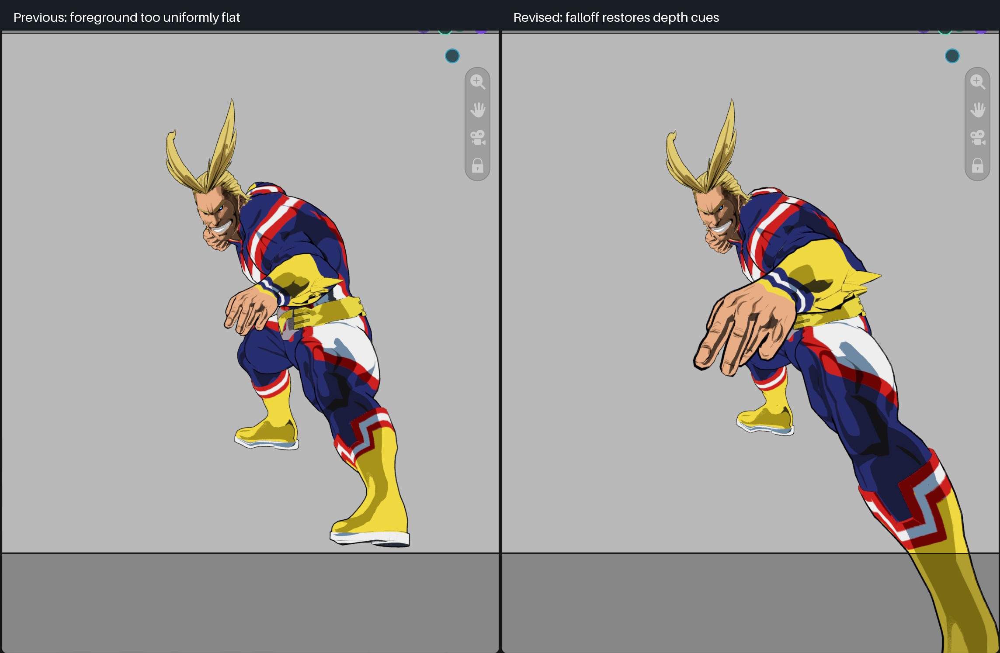

Falloff restores near/far apparent size
Schema 27 replaces the previous foreground continuation, which made partial-falloff geometry look too uniformly flat. Protected magnification now blends reciprocally between native and full long-lens scales. Reducing influence enlarges foreground toward its native size and shrinks background toward its native size; the camera-plane depth guard is independent.

Both captures use the same 15 mm camera and 250 mm apparent lens. The revised foreground is deliberately larger and can extend beyond the frame as native placement returns. This is a controlled blend toward native perspective, not a promise of identical 250 mm local shape at every partial weight. Full optical influence remains unchanged.
Execution and cost
21 fixture runs pass on Blender 4.2.23, 4.3.2, 4.4.3, 4.5.15, 5.0.1, 5.1.2 and 5.2.2. Includes foreground/background monotonic magnification, native lateral endpoint, bounded camera-plane geometry, clipping continuity and asset migration/reopen. 36 baseline cases preserve ≤215 mm output and the full optical endpoint.
32,001-point retained evaluation medians: new 2.02/2.13 ms; baseline 2.05/2.18 ms. No observed regression in this run; not whole-scene viewport FPS. No topology growth, new reductions or per-frame Python scans. Physical Windows replay and wider motion review remain open.
The separation of projection constraints from a conventional camera is consistent with Coleman and Singh's nonlinear-projection framework; the reciprocal scale rule and near-plane continuation here are our implementation, not a formula claimed from that paper.
Results · Raw before · Raw after · Previous candidate · Overview